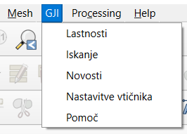
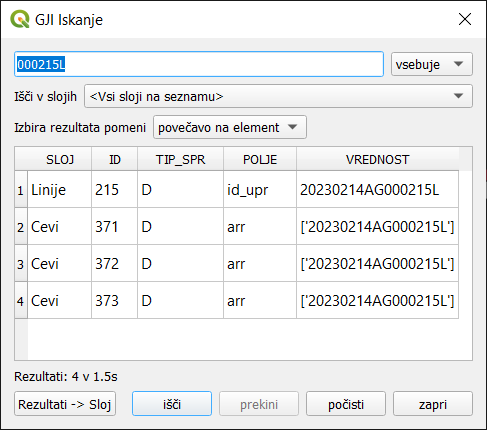
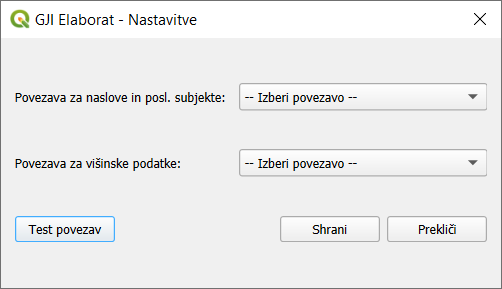

Glavni meni
V glavnem meniju je dodana možnost GJI, ki vsebuje naslednje vrednosti:

Lastnosti
- Lastnosti projekta prikazujejo informativne podatke o:
projektu (ime, opomba, verzija baze),
vrsti infrastrukture,
vlagatelju,
privzetih matičnih številkah o upravljavcih in izvajalcu
pooblaščenem inženirju geodezije (če je vpisan)
številki zadeve, predmetu vpisa (vnesemo pri izvozu elaborata)
datumu stanja podatkov GURS
Iskanje
Iskanje je namenjenu hitremu iskanju in prikazu rezultatov glede na vsa polja v posameznem sloju ali po več slojih naenkrat.

Novosti
Hitra povezava do strani Novosti z opisom posameznih verzij vtičnika.
Nastavitve vtičnika
Nastavitve povezav do zunanjih baz podatkov za pridobivanje podatkov o poslovnih subjektih, naslovih stavb ter višinskih podatkov (DMR izdelan iz LiDAR podatkov), ki jih uporabljajo orodja vtičnika.
Navodila za pripravo povezav uporabniki prejmejo po e-pošti.

Pomoč
Verzija vtičnika, nekaj kratkih napotkov in koristnih povezav ter kontaktni podatki za podporo.